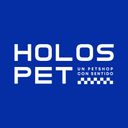
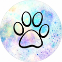
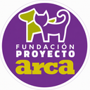

Mapa comunitario y gratuito para reportar y encontrar mascotas perdidas en la Región de Coquimbo, Chile



Ayudémoslos a volver a casa
Mapa comunitario y gratuito de mascotas perdidas, rescatadas y avistadas en la Región de Coquimbo. Sin registro: entras y publicas.
¿Qué significa cada pin del mapa?
Rojo · PerdidoSu familia lo está buscando.
Azul · RescatadoEstá a salvo, pero falta su familia.
Mostaza · AvistadoLo vieron suelto en la calle.
Verde · Volvió a casaFinal feliz, queda unos días en el mapa.
¿Qué quieres hacer hoy?
¿Cómo funciona?
No necesitas registrarte. Entras y reportas al tiro, sin cuenta ni contraseña.
¿Perdiste a tu mascota? Búscala en el mapa. ¿La encontraste o quieres avisar? Publica un reporte con foto y ubicación llenando el formulario.
Espera el contacto: quien la vea te escribirá directo por WhatsApp.
Quiénes somos
Somos Busca Huellitas, un equipo de estudiantes universitarios de la Universidad de La Serena y la Universidad Católica del Norte. @cachupinesucn y @mascotiendascl y @holospet.cl son quienes más han apoyado e impulsado esta iniciativa.
«Cada mascota merece volver a casa. Y cada familia, el alivio de reencontrarla o el amor de una nueva.»